Manual de Usuario — Campus Emerge · Abrí este archivo en el navegador
Documentación operativa
Manual de Usuario Campus Virtual Emerge Group
Guía detallada por roles: acceso público, alumnos, docentes/tutores,
coordinadores, administradores y superadministradores. Incluye capturas
de cada sección y el paso a paso de las funciones principales.
Versión 1.0 — septiembre 2026
Plataforma: Campus Emerge (Nuxt + Supabase)
Destinatarios: operación académica, coordinación y capacitadores internos
Índice
1. Introducción
El Campus Virtual de Emerge Group es la plataforma donde se gestionan
programas (cursos), inscripciones, contenidos, asistencia, calificaciones,
comunicaciones, certificados y reportes.
Este manual explica:
Qué ve y puede hacer cada rol.
Cómo navegar cada sección del menú.
Cómo cargar datos (cursos, alumnos, Excel de inscripción, materiales, notas).
Qué efecto tiene cada acción (ej.: convertir una solicitud crea usuario + inscripción).
Cómo usar este documento. En el navegador, usá el botón
Imprimir / Guardar PDF (o Ctrl+P). Activá “Encabezados y pies de página”
si el navegador lo ofrece; el CSS del manual ya define título, confidencialidad y número de página.
1.1 Roles y paneles
Hay seis roles. En la práctica se agrupan en tres paneles:
Rol
Panel principal
Para qué sirve
Alumno
/campus/student
Cursar, ver notas, asistencia, progreso y certificados
Docente / Tutor
/campus/teacher
Gestionar contenido, asistencia y calificaciones de sus cursos
Después del login, el sistema redirige al panel del rol de mayor jerarquía.
Si un usuario tiene más de un rol, puede cambiar de panel con el selector de roles.
1.2 Matriz rápida de permisos
Capacidad
Alumno
Docente
Coord.
Admin
Super
Ver catálogo / curso público
✓
✓
✓
✓
✓
Cursar lecciones inscritas
✓
—
—
—
—
Editar contenido / asistencia / notas
—
✓
✓
✓
✓
Alta alumnos / import Excel
—
—
✓
✓
✓
Emitir certificados / reportes
—
—
✓
✓
✓
Auditoría del sistema
—
—
—
—
✓
2. Sitio público y catálogo
Ruta: /campus
La landing del Campus presenta la propuesta formativa, el catálogo de programas,
el equipo docente, testimonios y anuncios públicos. No requiere iniciar sesión
para recorrerla ni para abrir la ficha de un curso.
Figura 2.1 — Portada pública del Campus.
Qué hace cada bloque
Hero / CTA: invita a conocer programas o ingresar al campus.
Catálogo: lista cursos publicados; al hacer clic se abre la ficha.
Anuncios públicos: comunicados visibles sin login.
Ficha de curso (público)
Ruta: /campus/cursos/[slug]
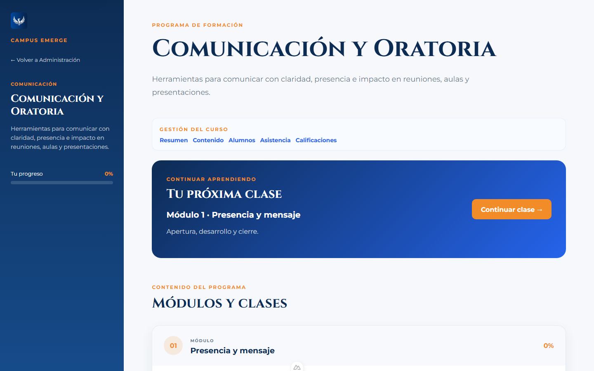
Figura 2.2 — Detalle de curso e inscripción.
Inscripción gratuita (precio 0): con sesión iniciada, el alumno se inscribe al instante.
Inscripción paga: si Mercado Pago está configurado, se inicia el checkout; el resultado vuelve a /campus/pagos/resultado.
Sin pagos online: puede mostrarse un contacto (mailto / WhatsApp) según configuración.
3. Acceso: login, registro y recuperación
3.1 Ingresar
Ruta: /campus/login
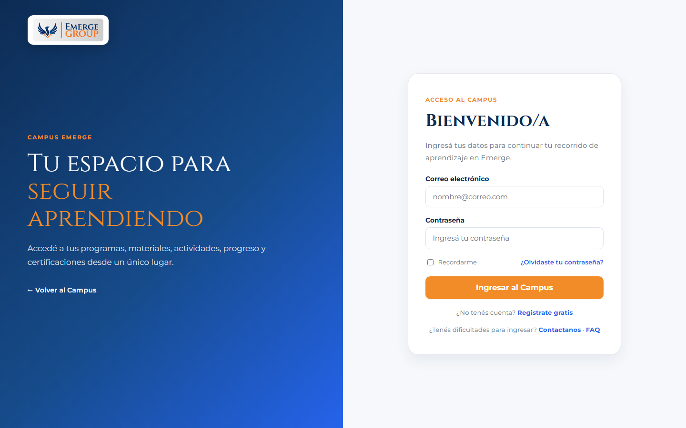
Figura 3.1 — Ingreso al Campus.
Abrí /campus/login.
Completá correo y contraseña.
Opcional: marcá Recordarme para guardar el correo en el navegador.
Pulsá Ingresar al Campus. El sistema te lleva a tu panel según el rol.
¿Olvidaste tu contraseña? Escribí el correo y usá el enlace de recuperación.
Recibirás un mail con link a /campus/restablecer-contrasena.
3.2 Registrarse
Ruta: /campus/registro
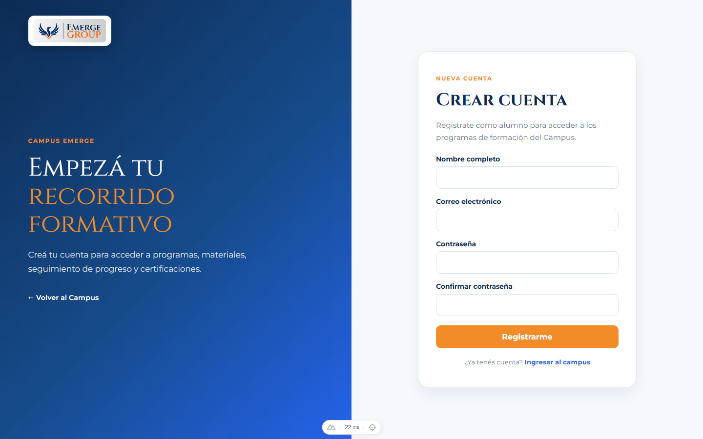
Figura 3.2 — Alta de cuenta por auto-registro.
El auto-registro crea una cuenta con rol alumno.
Para altas masivas de una cohorte (Diplomatura), preferí el flujo de
Solicitudes → Importar Excel.
4. Guía del alumno alumno
Menú lateral típico: Inicio · Mis cursos · Asistencia · Mis notas · Comunicaciones ·
Mi buzón · Mi progreso · Certificados.
4.1 Inicio
Ruta: /campus/student
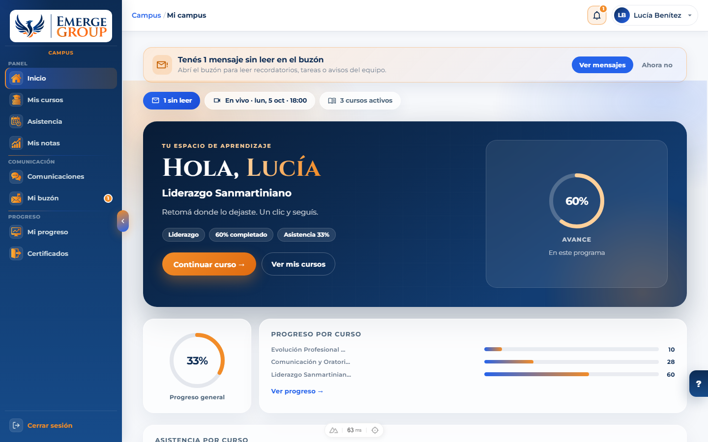
Figura 4.1 — Dashboard del alumno: KPIs, próximas clases y accesos rápidos.
Resumen de cursos activos, progreso y asistencia.
Atajos a cursos, notas, comunicaciones y certificados.
4.2 Mis cursos
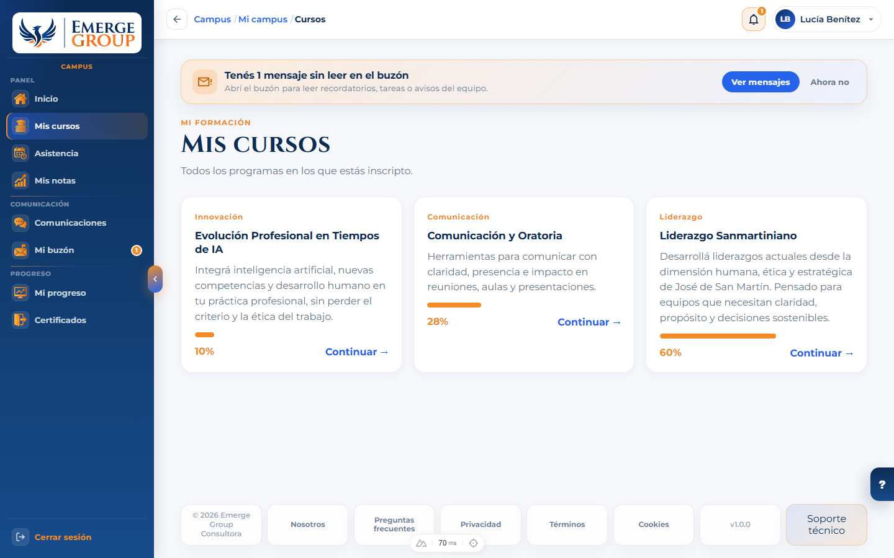
Figura 4.2 — Listado de programas en los que está inscrito.
Desde aquí abrís el programa. En el reproductor de lecciones podés marcar avance,
ver materiales y seguir el temario. Solo ves el contenido si tenés inscripción activa.
4.3 Asistencia
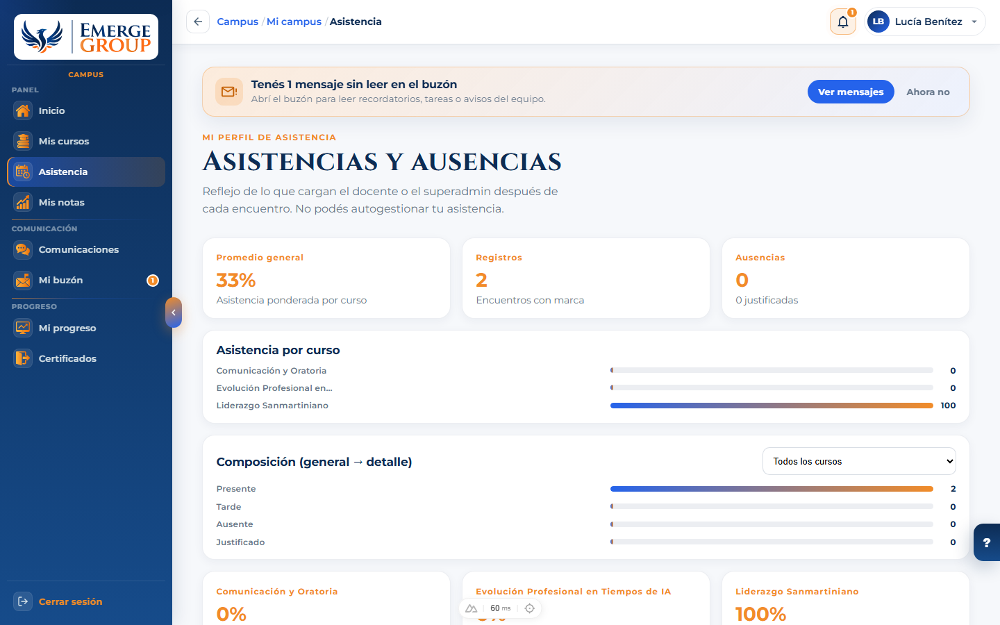
Figura 4.3 — Porcentaje y detalle de sesiones.
Consultá el estado por sesión (presente, ausente, tarde, justificado). No se edita desde el panel alumno.
4.4 Mis notas
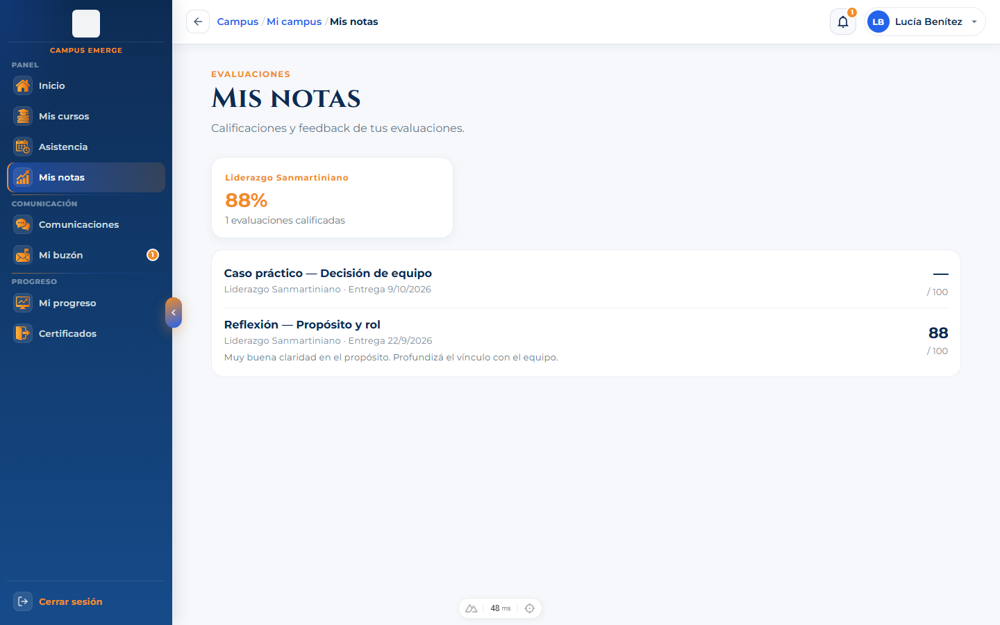
Figura 4.4 — Evaluaciones y devoluciones.
4.5 Comunicaciones
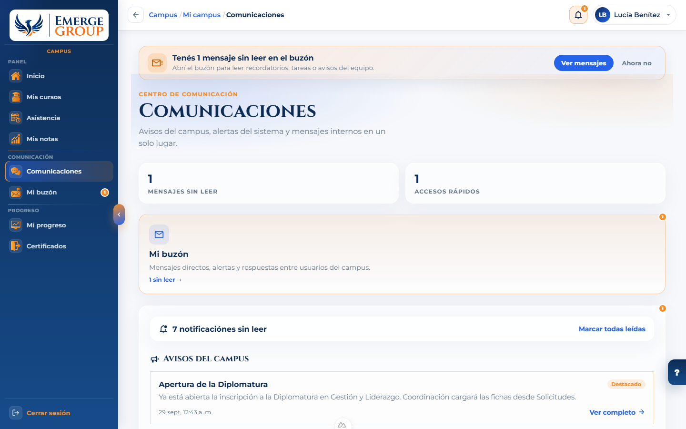
Figura 4.5 — Hub de avisos y acceso al buzón.
El alumno lee anuncios y mensajes; la redacción masiva de anuncios es de staff/docentes.
4.6 Mi progreso
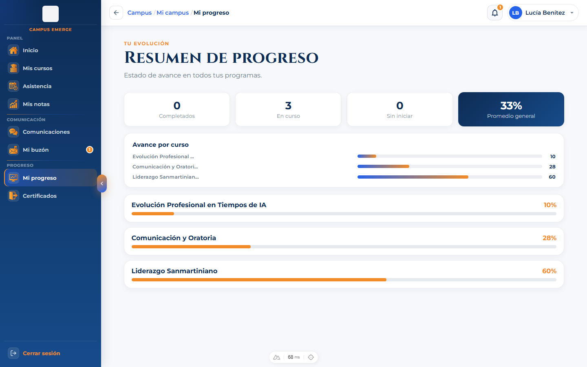
Figura 4.6 — Completados, en curso y pendientes.
4.7 Certificados
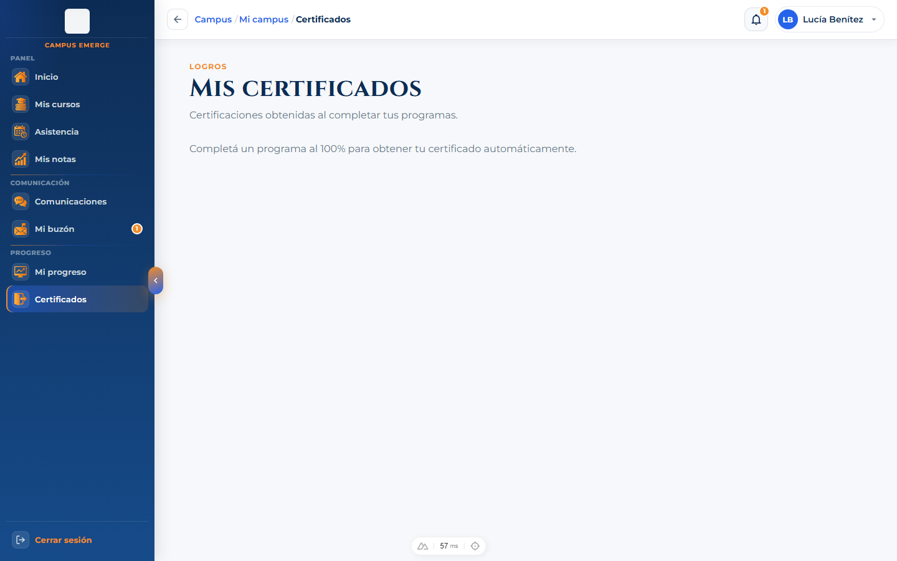
Figura 4.7 — Certificados emitidos; el código abre la verificación pública.
La página pública /campus/certificados/[codigo] permite validar un certificado
sin iniciar sesión.
5. Guía del docente / tutor docente · tutor
Menú: Inicio · Mis cursos · Comunicaciones · Anuncios · Mi buzón.
5.1 Inicio
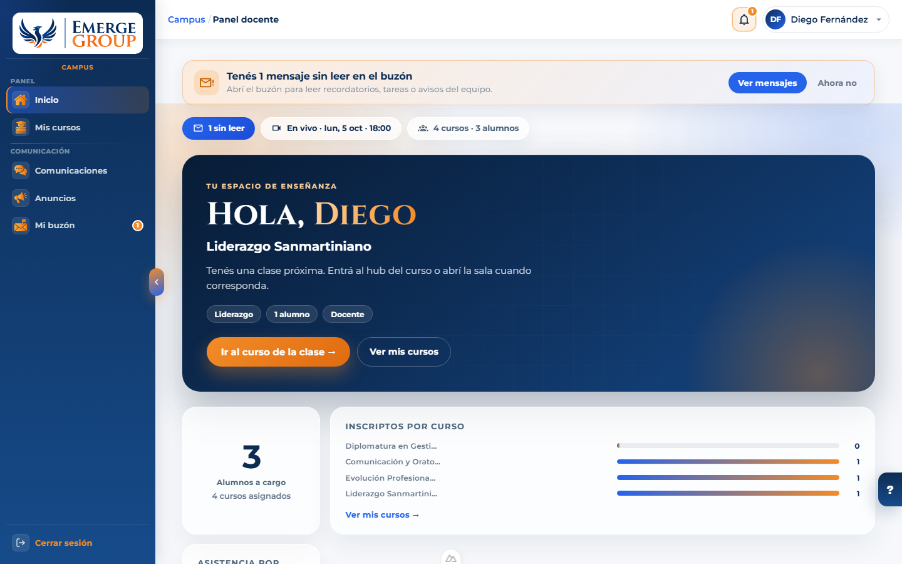
Figura 5.1 — Resumen de cursos y alumnos a cargo.
5.2 Mis cursos
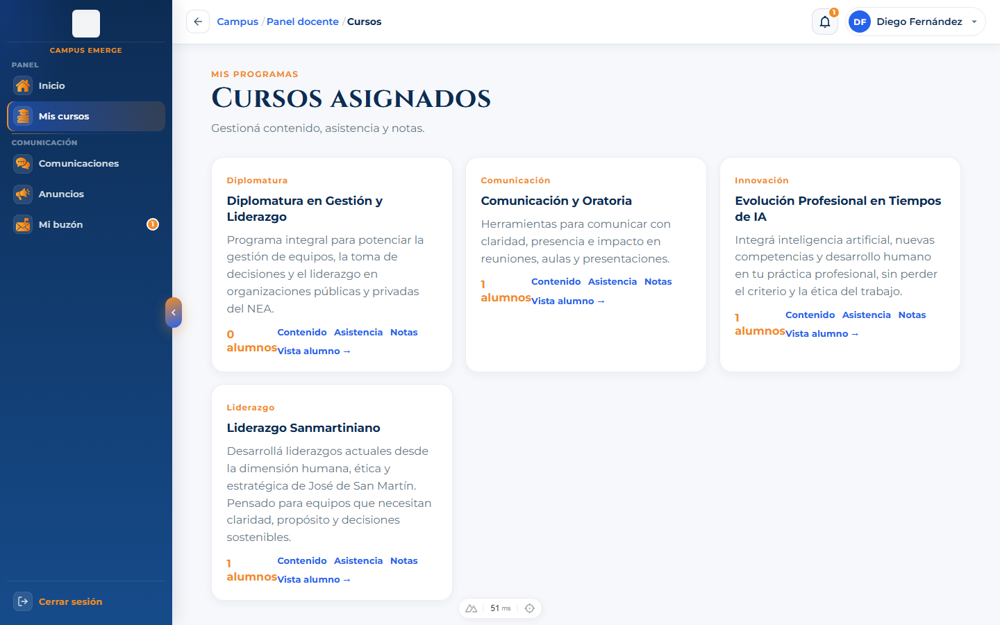
Figura 5.2 — Accesos a Contenido, Asistencia y Notas por curso asignado.
Desde cada curso podés:
Contenido: módulos, lecciones, videos y materiales.
Asistencia: sesiones y marcar presentes / ausentes / tarde / justificado.
Notas: crear evaluaciones y cargar calificaciones con devolución.
El detalle de estas tres herramientas está en la sección 6.6 (misma UI para staff).
5.3 Comunicaciones y anuncios
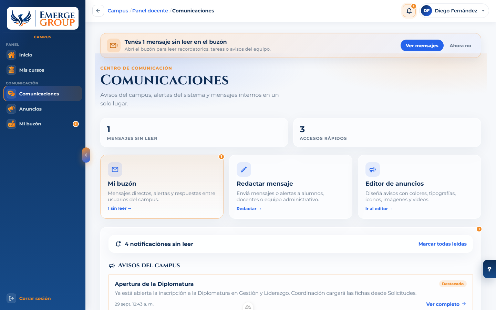
Figura 5.3 — Hub de comunicaciones del docente.
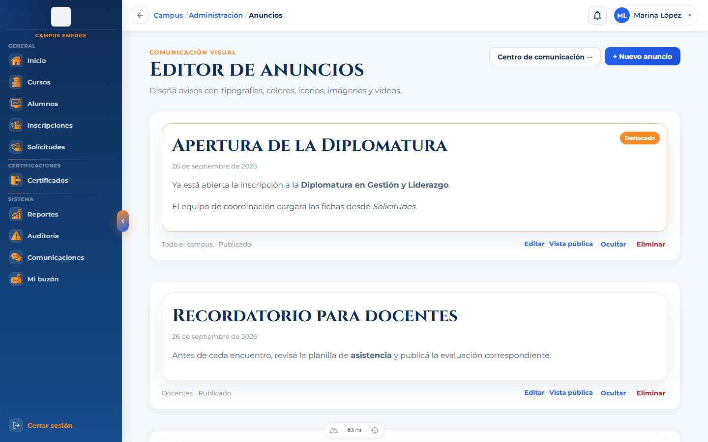
Figura 5.4 — Listado de anuncios: crear, publicar, editar o archivar.
Entrá a Anuncios o desde Comunicaciones → editor.
Creá un anuncio nuevo con el editor visual.
Publicá cuando esté listo (o dejalo en borrador).
Los anuncios públicos también pueden verse en la landing / ruta de anuncios.
6. Guía de administración y coordinación coordinador · admin · superadmin
Elegí el curso destino (debe existir y preferentemente estar publicado).
Seleccioná el archivo .xlsx. El sistema lee colores y columnas:
nombre, email, WhatsApp, audiencia, desafío, rol laboral, ocupación, ciudad.
Revisá el resumen: cantidad de listos vs en duda.
Opcional: filtrá, buscá, marcá naranjas como listos o rechazá.
Pulsá Crear todos los listos (o seleccioná filas → Crear seleccionados).
Descargá el CSV de contraseñas temporales y envialas a cada persona.
Reimportar el mismo email+curso actualiza la ficha sin pisar convertidos.
Si el email ya tenía cuenta, se reutiliza y solo se crea/asegura la inscripción.
6.6 Gestión de un curso: contenido, asistencia y notas
Contenido
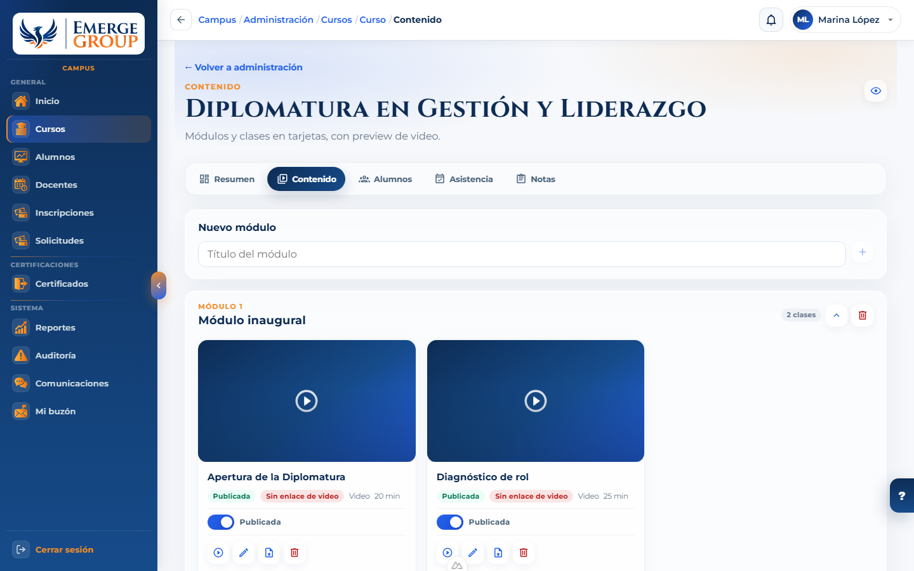
Figura 6.9 — Módulos y lecciones: video, materiales y publicación.
Creá módulos (unidades temáticas).
Dentro de cada módulo, agregá lecciones (título, texto, URL de video).
Subí materiales (PDF, etc.) y publicá cuando estén listos.
El alumno ve solo lo publicado, si está inscrito.
Asistencia
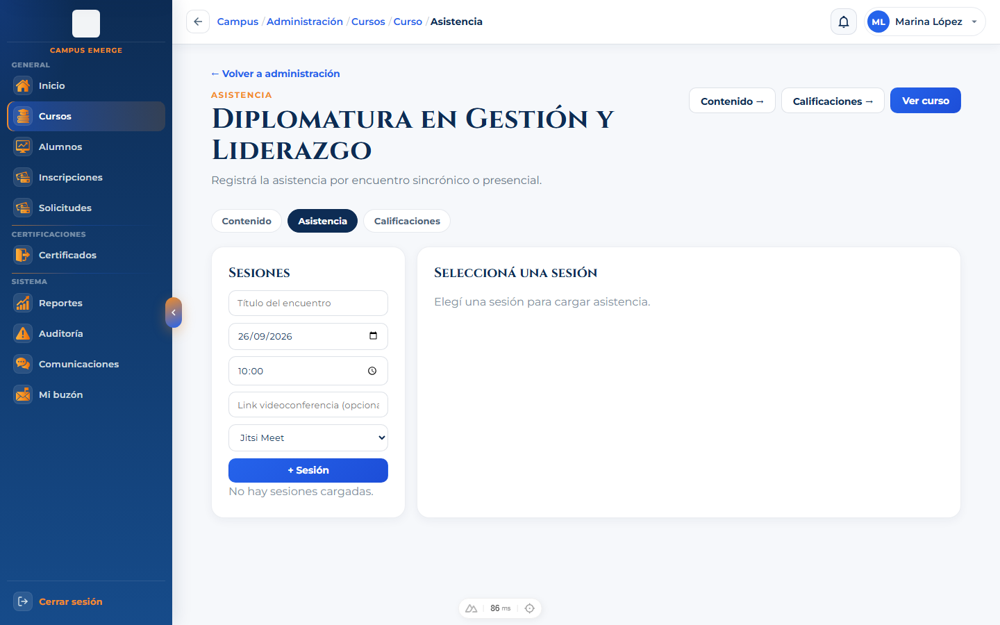
Figura 6.10 — Sesiones y planilla de asistencia.
Creá una sesión (fecha, horario, link de reunión si aplica).
Marcá cada alumno: presente / ausente / tarde / justificado.
Podés usar “marcar todos presentes” y luego ajustar excepciones.
Calificaciones
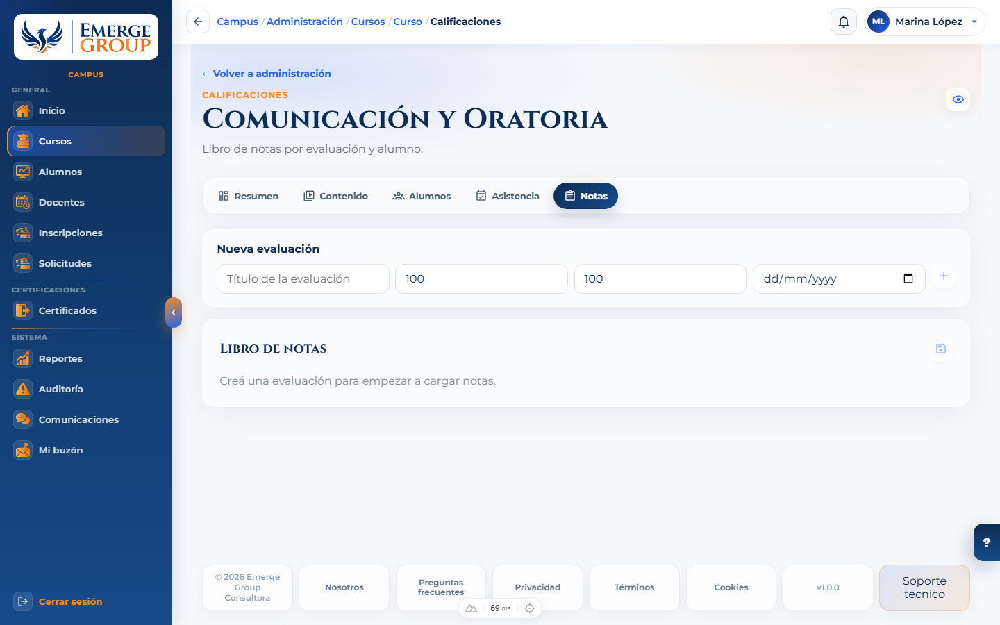
Figura 6.11 — Evaluaciones y carga de notas con feedback.
Creá una evaluación (nombre, tipo, puntaje máximo).
Completá la grilla alumno × evaluación.
Guardá; el alumno lo verá en Mis notas.
6.7 Certificados, reportes, comunicaciones y auditoría
Certificados
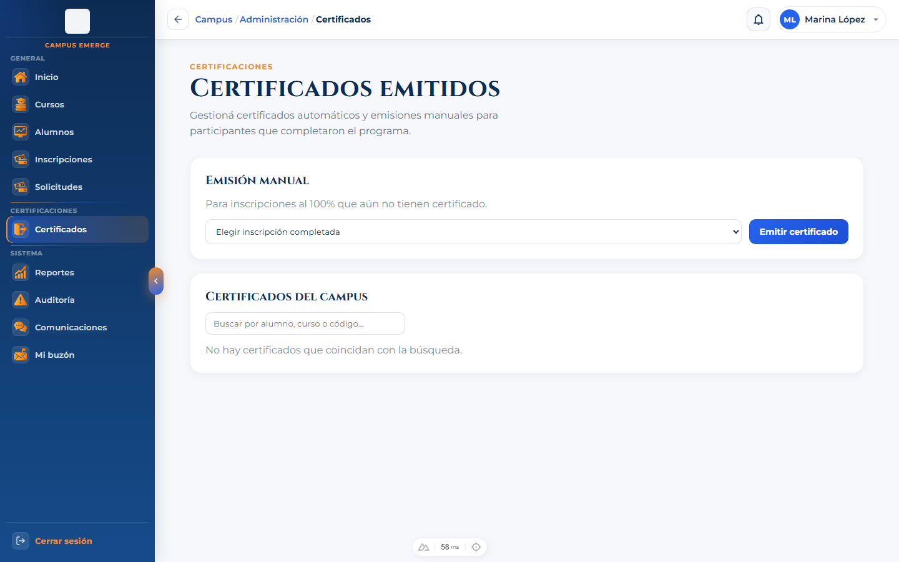
Figura 6.12 — Emisión manual para inscripciones con 100 % de progreso.
Emití el certificado cuando el alumno completó el programa; se genera un código verificable públicamente.
Reportes
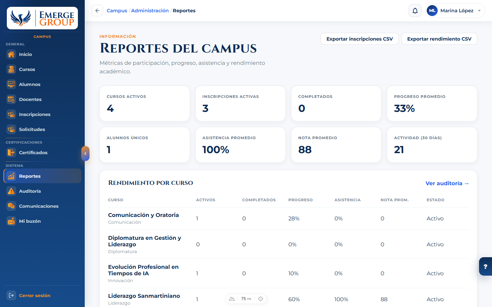
Figura 6.13 — KPIs, tablas de desempeño y exportación CSV.
Comunicaciones
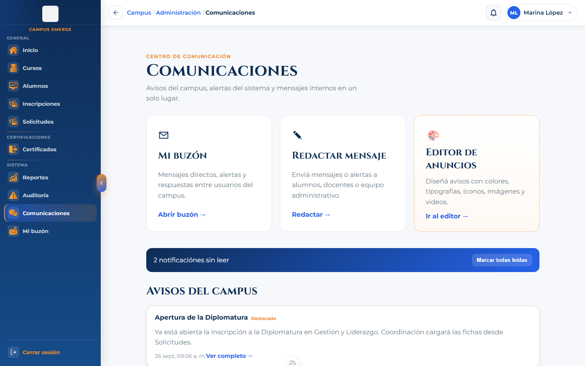
Figura 6.14 — Hub: buzón, redacción, anuncios y feed.
Auditoría (solo superadmin)
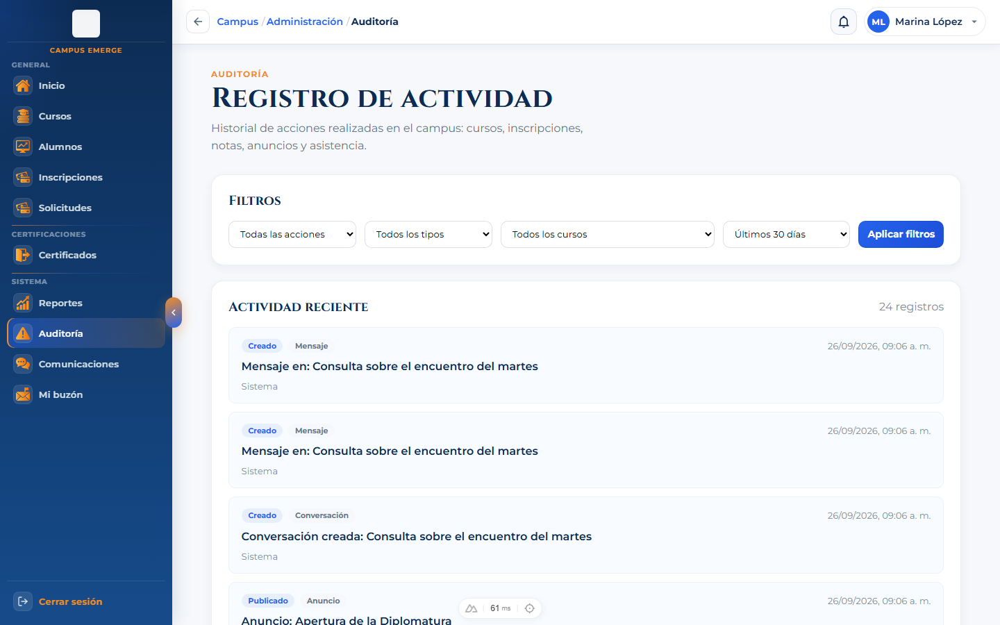
Figura 6.15 — Registro de acciones del sistema con filtros.
7. Buzón interno
Ruta: /campus/buzon · disponible para todos los roles
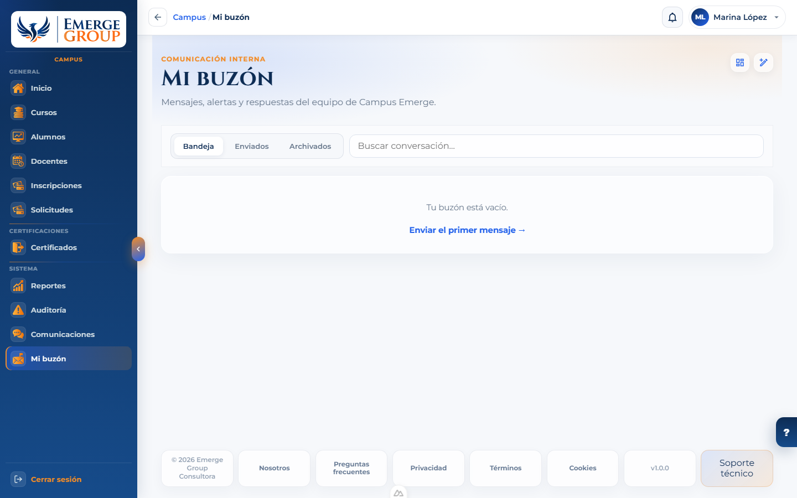
Figura 7.1 — Entrada, enviados y archivados; badge de no leídos en el menú.
Alumnos: leen hilos; la composición avanzada está orientada a staff/docentes.
Staff / docentes: pueden redactar desde /campus/buzon/redactar.
8. Flujos operativos recomendados
8.1 Armar un programa nuevo de punta a punta
Admin → Cursos → Nuevo curso (borrador).
Asignar docente/tutor.
Cargar Contenido (módulos y lecciones).
Definir precio y cohorte.
Publicar el curso.
Ingresar alumnos (manual o Excel) e inscribir.
Crear sesiones de asistencia y evaluaciones.
Al cierre: emitir certificados y revisar reportes.
Revisar en duda → Marcar listo cuando corresponda.
Crear todos los listos → Descargar CSV de claves.
Enviar credenciales + link /campus/login.
8.3 Clase en vivo (asistencia)
Docente o admin abre Asistencia del curso.
Crea la sesión del día (con link Meet/Zoom si aplica).
Marca asistencia al cierre.
El alumno lo ve reflejado en su panel.
9. Preguntas frecuentes
¿Por qué no veo Auditoría?
Solo el rol superadmin tiene esa entrada en el menú.
¿Dónde se gestionan los pagos?
No hay un menú “Pagos” en admin. El cobro ocurre en la ficha del curso
(Mercado Pago) y el retorno en /campus/pagos/resultado.
Si no hay token de MP configurado, los pagos online quedan deshabilitados.
Importé el Excel pero no se crearon usuarios
La importación solo carga solicitudes. Tenés que pulsar
Crear todos los listos (o seleccionados) y luego bajar el CSV.
El alumno no ve el contenido
Verificá: 1) inscripción activa, 2) curso/lecciones publicados, 3) sesión iniciada con la cuenta correcta.
¿Puedo usar usuarios de prueba en producción?
No. Los usuarios @test.emerge.local son solo para desarrollo/capacitación local.